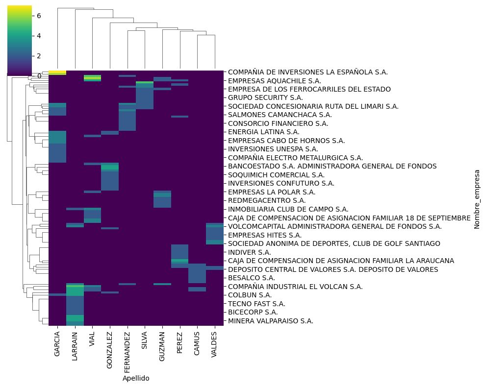

Hay apellidos con mucha presencia en una o varias empresas?
Se observan apellidos como los GARCIA que tienen una presencia muy importante en una sola empresa, en su caso, "COMPAÑIA DE INVERSINOES LA ESPAÑOL S.A.". Por otro lado hay apellidos como LARRAIN que tienen una importante presencia es muchas empresas.
Un último insight importante de destacar es identificar ciertos apellidos altamente relacionados, como es el caso de FERNANDEZ y SILVA, lo que se condice con hay empresas donde ambos apellidos tienen presencia entre los directivos, así, pudiendo observar posibles agrupaciones de familias relacionadas.
